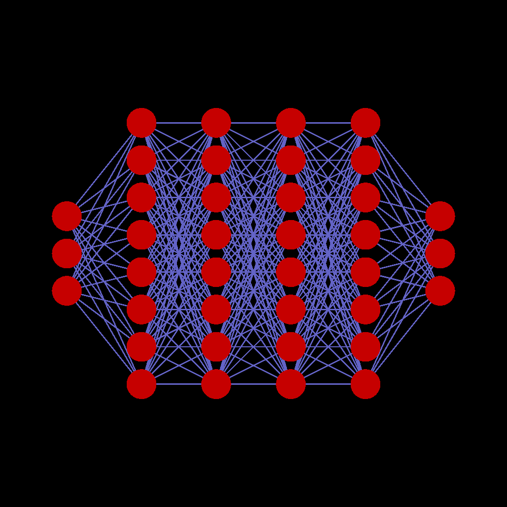

ITON
ITON
| civic chip requirements | 9.673e+26 bits & 1.661e+32 bits/s | |||||
|---|---|---|---|---|---|
| number needed | power draw | bare substrate volume | processing used | memory used | |
| Civic-2 chip | 3322000000000001 | 33.22PW | 0.332200km3 ≈ (692.6m)3 | 100.00% | 0.03% |
| Civic-3 chip | 20762500000001 | 207.6TW | 0.00207625km3 ≈ (127.6m)3 | 100.00% | 4.66% |
| Civic-4 chip | 1612166666667 | 5.315TW | 0.000161217km3 ≈ (54.43m)3 | 32.97% | 100.00% |
| Civic-5 chip | 1328800000000000300 | 13.29EW | 132.880km3 ≈ (5.103km)3 | 100.00% | 0.000003% |

artificial minds